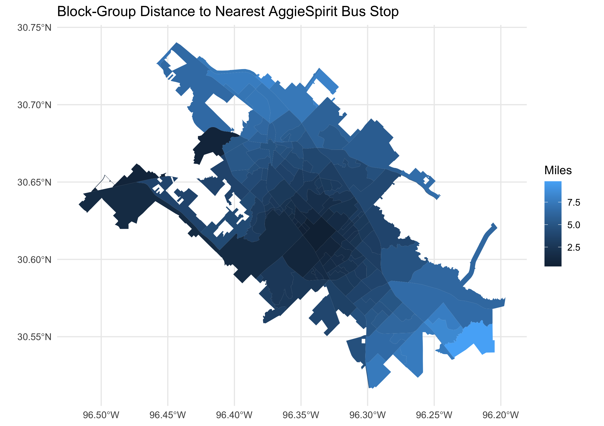
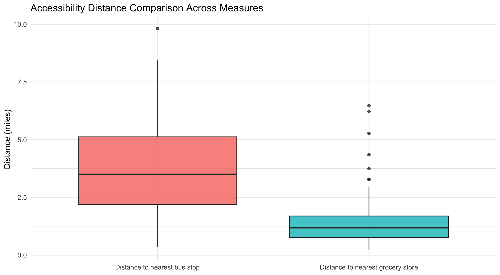
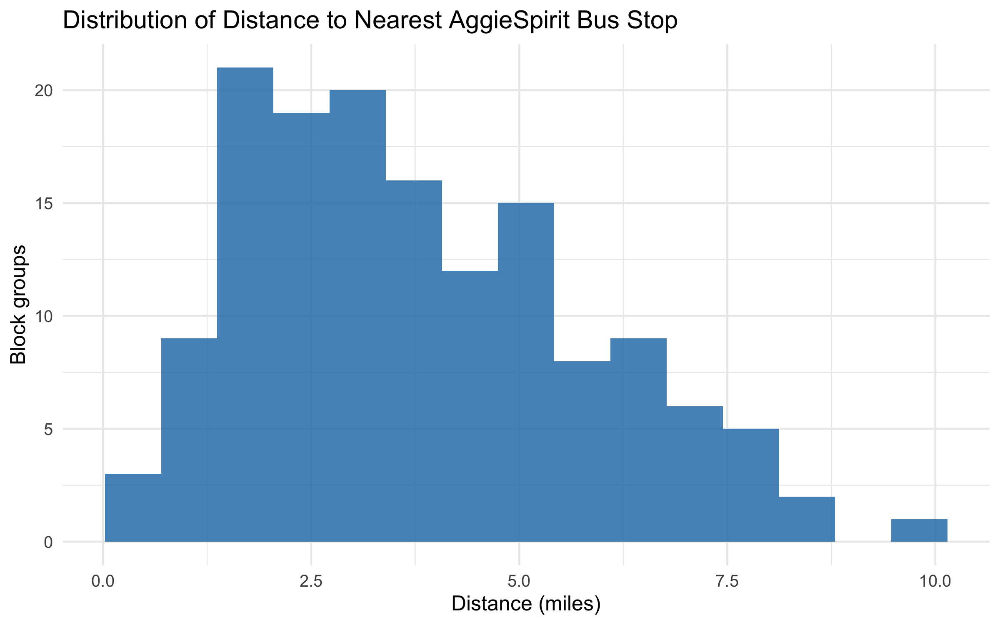
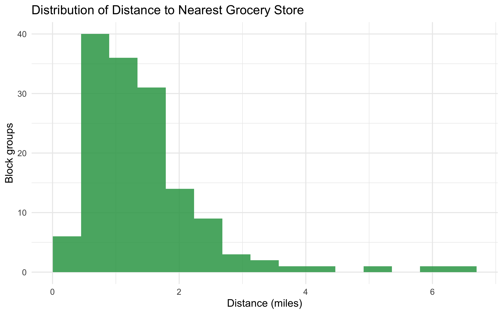

Geography and destinations
Census TIGER/Line faces, AggieSpirit stop data and compiled grocery-store coordinates.
GEOG 312 / Group 20 / Spring 2026
Our GEOG 312 group compared neighborhood-scale proximity to university bus stops and grocery stores using a reproducible R spatial workflow.




Census TIGER/Line faces, AggieSpirit stop data and compiled grocery-store coordinates.
Build 146 block groups, create representative origins and calculate nearest-feature distances in R.
Saved choropleth, boxplots, histograms and descriptive tables for bus and grocery proximity.
Census block groups are small statistical areas used to organize population data. Here, each area has a representative origin for comparing proximity to the two destination types.
Our group asked whether student-heavy neighborhoods have different access to bus stops and groceries. The available outputs support a full-area proximity comparison across 146 block groups. They do not complete the student-heavy classification join needed to test the original neighborhood-group hypothesis.
The retained output table reports mean nearest distances of 3.80 miles to an AggieSpirit stop and 1.42 miles to a grocery store. These are the workflow’s recorded distance estimates, not travel-time or walking-distance measurements.
I contributed to the group’s data and report work and retained an updated project workspace containing analysis code, processed data, tables and figures. The report credits Ethan DeMelo, Slone Early, Constantinos Christou and Austin Yao Chen. The available source does not assign every individual analysis step, so these figures are presented as team outputs.
The workflow combined official Census geography, university transit stops and grocery-store coordinates compiled through Google Maps searches. In RStudio, sf, dplyr, readr, tidyr and ggplot2 prepared the layers and figures. The saved code groups TIGER/Line faces into block groups and uses point-on-surface representative origins, although the report often calls them centroids.
Inputs, processed GeoJSON, an analysis-ready CSV and summary tables are retained with the coursework. This portfolio extracts the existing figures without executing or rewriting that analysis.
The retained distance calculations use Web Mercator (EPSG:3857), whose scale distortion limits local ground-distance interpretation. I would repeat the measurements in a suitable local projected CRS and compare them with pedestrian network travel distances.
The same block groups produce both distance measures. A paired comparison is more appropriate than treating those two samples as independent; I do not present the report’s unpaired significance claim as a verified result. I would also complete the missing student-heavy join, document store inclusion rules, and account for transit frequency and service coverage.
Source: Group 20 final report and the retained updated R workspace, including overall_summary_stats.csv and four original figures. Report labels and analytical limits remain visible.